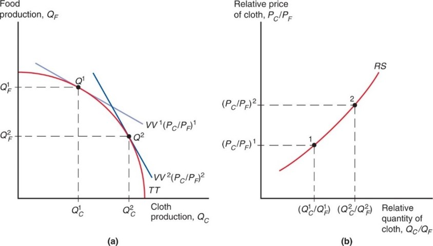

The Standard Model
ECES905205 pertemuan 5
04 March 2024
Similarities
So far, our models have certain similarities:
- Trade is driven by difference in PPF.
- PPF determines relative supply scheduule.
- World equilibrium ditentukan oleh demand dunia dan posisi kita sebelum trade.
Today, we’re standardizing ’em
We continue the case where home country export \(C\) and import \(F\).
The standard model
Relative supply and relative deman
Terms of trade & welfare
Effects of economic growth, import tariffs, and export subsidies
International borrowing and lending
Principle
the relationship between the production possibility frontier and the relative supply curve,
the relationship between relative prices and relative demand,
the determination of world equilibrium by world relative supply and world relative demand, and
the effect of the terms of trade—the price of a country’s exports divided by the price of its imports—on a nation’s welfare.
PPF
What country produces depensd on the relative price of cloth to food \(\frac{P_C}{P_F}\)
An economy chose \(Q_C,Q_F\) to maximize \(V=P_CQ_C+P_FQ_F\) given \(\frac{P_C}{P_F}\).
V is an isovalue of output with slope = \(\frac{P_C}{P_F}\)
PPF
When \(\frac{P_C}{P_F} \uparrow\), slope gets steeper, production decision moves to Q2. This changes reflected in the market as a relative supply of cloth.
Relative prices & demand
- The value of the economy’s consumption must equal the value of the economyu’s production
\[ P_CD_C+P_FD_F=P_CQ_C+P_FQ_F=V \]
let’s assume the economy’s consumption decision may be represented by a single representative consumer.
more assumption: this decision follows a certain nicely designed function which can be visualized by an indifference curve.
Price & welfare
When \(\frac{P_C}{P_F} \uparrow\), VV’s slope steepen. Production & consumption moves from \(\{Q^1,D^1\}\) to \(\{Q^2,D^2\}\). \(D^3=Q^3\) is the autarky equilibrium.
Case: US & China
The aggregate gains from trade are in large part driven by consumers’ access to cheaper imported goods.
On average, US gains from trading with China represented $1,500 per household per year between 2000-2007, mainly from decrease in prices.
And those price decreases were more pronounced for goods consumed by relatively poorer households.
Case: Indonesian rice
Rice import protection is in place to protect farmers’ income.
However, McCulloch (2008) shows that only 25% of HH plant rice, and 80% of them are net consumers in 2004.
- In 2012, the number is 88% according to Patunru.
Those that gain from higher prices tend to be farmers with access to slightly larger plots of land.
Thus an increase in the rice price constitutes a transfer from the large majority of consumers to a minority of producers at all income levels.
Terms of trade
The terms of trade refers to the price of exports relative to the price of imports. When a country exports cloth and the relative
-price of cloth increases, the terms of trade rise.
Because a higher relative price for exports means that the country can afford to buy more imports, an increase in the terms of trade increases a country’ s welfare.
A decline in the terms of trade decreases a country’s welfare.
Determining prices

- We need to have world quantities from H & F (assume only these 2 countries exist)
\[ \frac{Q_C+Q_C^*}{Q_F+Q_F^*} \\ \frac{D_C+D_C^*}{D_F+D_F^*} \]
w/o trade, home has lower \(\frac{P_C}{P_F}\) and higher C production relative to F cuz it’s good at making \(C\).
trade converges to \(RS^{WORLD}\)
Equilibrium prices
Home PPF skews toward \(C\) while foreign toward \(F\). This differences allow trade to benefit both countries.
International effects of growth
Growth is usually biased: it occurs in one sectore more than others, leads to changes in relative supply & in turn relative prices.
Rapid growth has occurred in U.S. computer industries but relatively little growth has occurred in U.S. textile industries.
In the Ricardian model, technological progress in one sector causes biased growth.
In the Heckscher-Ohlin model, an increase in one factor of production causes biased growth.
Biased growth
Biased growth and the resulting change in relative supply causes a change in the terms of trade.
Biased growth in the cloth industry (in either the home or foreign country) will lower the price of cloth relative to the price of food and lower the terms of trade for cloth exporters.
Biased growth in the food industry (in either the home or foreign country) will raise the price of cloth relative to the price of food and raise the terms of trade for cloth exporters.
Biased growth
Growth biased toward cloth shifts the R S curve for the world to the right (a), while growth biased toward food shifts it to the left (b).
Effects of growth
Export-biased growth is growth that expands a country’s production possibilities disproportionately in that country’s export sector.
- Biased growth in the food industry in the foreign country is export-biased growth for the foreign country.
Import-biased growth is growth that expands a country’s production possibilities disproportionately in that country’s import sector.
- Biased growth in cloth production in the foreign country is import-biased growth for the foreign country.
Terms of trade
Export-biased growth reduces a country’s terms of trade, reducing its welfare and increasing the welfare of foreign countries.
Import-biased growth increases a country’s terms of trade, increasing its welfare and decreasing the welfare of foreign countries.
The larger the countries, the larger its growth impacting the global economy.
2 large countries
Has the United States suffered from a deterioration in its terms of trade as some of its main trading partners (such as China) experienced rapid growth?
- This would represent an aggregate income loss for the United States.
The standard trade model predicts that if the growth in China is mainly import-biased, the growth in sectors that compete with U.S. exports would reduce the U.S. terms of trade.
2 large countries
But data indicates that changes in the U.S. terms of trade have been small with no clear trend over last few decades.
- The U.S. terms of trade in 2014 was essentially at the same level as it was in 1980.
The terms of trade for China have deteriorated over the past decade, suggesting their recent growth may have been export-biased.
Terms of trade
US vs China
But data indicates that changes in the U.S. terms of trade have been small with no clear trend over last few decades.
The U.S. terms of trade in 2014 was essentially at the same level as it was in 1980.
The terms of trade for China have deteriorated over the past decade, suggesting their recent growth may have been export-biased.
Indonesia?
Like the United States, most developed countries tend to experience mild swings in their terms of trade, around 1 percent or less a year (on average).
Some developing countries’ exports are heavily concentrated in mineral and agricultural sectors.
The prices of those goods on world markets are very volatile, leading to large swings in the terms of trade.
These swings in turn translate into substantial changes in welfare.
Tariff & subsidies
Import tariffs are taxes levied on imports.
Export subsidies are payments given to domestic producers that export.
Both policies influence the terms of trade and therefore national welfare.
Import tariffs and export subsidies drive a wedge between prices in world markets and prices in domestic markets.
Tariff effect
say home govt impose tariff on food import
\(\frac{P_C}{P_F}\) decrease in domestic market.
\(\frac{Q_C}{Q_F}\) and \(\frac{D_C}{D_F}\) goes down as well.
If the decreased food demand is large enough, this will decrease global price.
Meaning, tot goes up, which may increase domestic welfare.
Tariff effect
The magnitude of this effect depends on the size of the home country relative to the world economy.
If the country is a small part of the world economy, its tariff (or subsidy) policies will not have much effect on world relative supply and demand, and thus on the terms of trade.
But for large countries, a tariff may maximize national welfare at the expense of foreign countries.
Export subsidy effect
If the home country imposes a subsidy on cloth exports, the price of cloth relative to the price of food rises for domestic consumers.
Domestic producers will receive a higher relative price of cloth when they export, and therefore will be more willing to switch to cloth production: relative supply of cloth will increase.
Domestic consumers must pay a higher relative price of cloth to producers, and therefore will be more willing to switch to food consumption: relative demand for cloth will decrease.
When the home country imposes an export subsidy, the terms of trade decrease and the welfare of the country decreases to the benefit of the foreign country.
Tot gain & loss
The standard trade model predicts that
an import tariff by the home country can increase domestic welfare at the expense of the foreign country. by increasing terms of trade.
an export subsidy by the home country reduces domestic welfare to the benefit of the foreign country.
More implications
Additional effects of tariffs and subsidies that can occur in a world with many countries and many goods:
A foreign country may subsidize the export of a good that the United States also exports, which will reduce the price for the United States in world markets and decrease its terms of trade.
Chinese industrial subsidies reduces manufacturing goods’ prices, which hurt Indonesian manufacturers.
A foreign country may put a tariff on an imported good that the Indonesia also imports, which will reduce the price for the Indonesia in world markets and increase its terms of trade.
More implications
Export subsidies by foreign countries on goods that
Indonesian imports reduce the world price of Indonesian imports and increase the terms of trade for Indonesia
Indonesia also exports reduce the world price of Indonesian exports and decrease the terms of trade for Indonesia.
Import tariffs by foreign countries on goods that
Indonesia exports reduce the world price of Indonesian exports and decrease the terms of trade for Indonesia.
the Indonesia also imports reduce the world price of Indonesian imports and increase the terms of trade for Indonesia.
Implications
Export subsidies on a good decrease the relative world price of that good by increasing relative supply of that good and decreasing relative demand of that good.
Import tariffs on a good decrease the relative world price of that good (and increase the relative world price of other goods) by increasing the relative supply of that good and decreasing the relative demand of that good.
Results depend on the size of the countries in question.
International borrowing & lending
The standard trade model can be modified to analyze international borrowing and lending.
- Two goods are current and future consumption (same good at different times), rather than different goods at the same time.
Countries usually have different opportunities to invest to become able to produce more in the future.
A special kind of production possibility frontier, an intertemporal production possibility frontier, depicts different possible combinations of current output and future output.
International borrowing
If you borrow 1 unit of output, you must repay principal + interest \(= 1+ r\) in the future, where \(r\) is the real interest rate.
The price of future consumption relative to current consumption is \(\frac{1}{1+r}\)
1 unit of current consumption is worth \(1+r\) of future consumption.
so 1 unit of future consumption is worth \(\frac{1}{1+r}\)
International borrowing
Home exports current consumption and imports future consumption.
Home lends to Foreign by consuming less than it produces now. Home able to consume more than produces in the future when Foreign pays back the loan.
Foreign borrows to be able to consume more than produces now, and pays back the loan by consuming less than produces in the future.
International borrowing
When international borrowing and lending are allowed, the world real interest rate is determined by the intersection of world relative demand and world relative supply.
The world real interest rate will be between the real interest rates that existed in the two country’s prior to intertemporal trade.
The real interest rate rises in the country that lends (home) and falls in the country that borrows (foreign) due to intertemporal trade.
Intl borrowing & lending
Intl transfers
Transfers of income sometimes occur from one country to another.
War reparations or foreign aid may influence demand of traded goods and therefore relative demand.
International loans may also influence relative demand in the short run, before the loan is paid back.
How do transfers of income across countries affect relative demand and the terms of trade?
Intl transfers
Quite often, international income transfers are used to fund imports. Meaning, demand of imported goods increased, hence lower relative price.
This means \(\frac{P_C}{P_F} \downarrow\) cuz F is the imported goods.
the terms of trade would fall and the demand of cloth relative to food would decrease (represented by shifting the relative demand curve left).
Intl trade & borrowing
In our standard trade, gains come from more access to goods and services: the only reason we export is so we can import.
if we can’t import then exporting is useless.
therefore, trade will always balance (\(PQ =PD\)).
In intertemporal trade, we can export more than we import.
- \(PQ > PD \rightarrow\) trade surplus, meaning we lend.
- \(PQ < PD \rightarrow\) trade deficit, meaning we borrow.
Intl trade & borrowing
This is the case of Norway & Saudi. Both countries are huge exporters of oil.
- Instead of consuming their exports by importing stuff, they lend internationally in the form of sovereign wealth fund.
Also the case why we have plenty of FDI in Indonesia: surplus countries like China, Korea and Japan are investing their surpluses into Indonesia.
At the same time, Indonesia is also invest in other countries. Remember Panama Papers?
Conclusions
The standard trade model combines all trade models we learned so far into 1 framework
It predicts changes in welfare and income in various cases:
import tax, export subsidy, international income transfers.
all of these impact are through changes in terms of trade.
It is important to understand the assumption behind this model.
- In the policy part, we will learn what if these assumptions are violated.
The finance part
The standard model is a real model in the sense that it doesn’t care about the financial sector.
- The only reason you export is because you want to import. ie. X-M=0
The international income transfers and intertemporal trade are cases where we must include the finance part of trade.
We will learn more in the international finance part of the course after mid-term.
we will also learn more on the impact of tariffs on a small and large countries after mid-term.